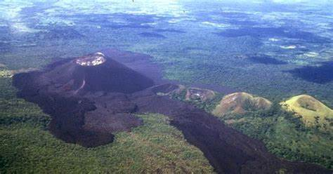

Cerro Negro es un volcán ubicado en el departamento de León, Nicaragua, a 25 kilómetros al este de la cabecera departamental del mismo nombre y tiene 726 metros de altura sobre el nivel del mar, pertenece a la cordillera de los Marrabios. Su nombre proviene del color que le da la arena negra volcánica en sus laderas; y surgió hace un siglo y medio al ras de la llanura.
Nació en la madrugada del 13 de abril de 1850, siendo uno de los más recientes partos de la historia volcánica del planeta, en medio de temblores, ruidos subterráneos, y proyecciones de lava. Es uno de los pocos volcanes históricos del mundo, como el Izalco en El Salvador, el Santiaguito en Guatemala y el Paricutín en México, pues la mayoría surgió en la prehistoria. En dos semanas alcanzó unos 50 metros de altura y en erupciones posteriores se caracterizó por la apertura de conos adventicios o grietas por donde fluyeron corrientes de lava; el cráter volcánico se caracterizó por una espesa nube de piroclastos de 6 kilómetros de altura que descargó una lluvia de cenizas al occidente, castigando principalmente a la ciudad de León.
El Cerro Negro ha tenido 23 erupciones en total –las últimas muy violentas incluyendo la primera– en 1867, 1914, 1923, 1947, 1946, 1950, 1968, 1971, 1992, 1995 y 1999; en la de julio y agosto de 1947 estuvo en erupción dos semanas y era tal la lluvia de ceniza sobre León que hasta se acumulaba en las calles, techos de tejas de las casas y la terraza de la Catedral; no se podía respirar por lo que el obispo Isidro Augusto Oviedo y Reyes le prometió a la Virgen María que se celebraría la Gritería de Penitencia o Chiquita, llamada así para no confundirla con la del 7 de diciembre, la noche del 14 de agosto de cada año (víspera de la fiesta de la Asunción de la Virgen), para que se calmara el volcán. En noviembre y diciembre de 1995 ofreció un gran espectáculo lanzando curtidores de lava desde la cumbre; más recientemente en agosto de 1999 brotaron tres cráteres adventicios en las faldas del volcán arrojando lava y ceniza. De continuar estas erupciones en forma tan repetida y violenta llegará al cabo de pocos siglos a levantar su cabeza por encima de todos los otros volcanes vecinos.
